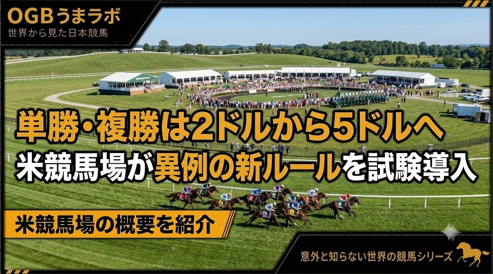

この記事はXに掲載された当時の原文です。情報は掲載時点の内容です。
単勝・複勝は2ドルから5ドルへ 米競馬場が異例の新ルールを試験導入
アメリカ・ケンタッキーダウンズ競馬場は、2026年の開催から馬券制度を大きく変更すると発表しました。
最も注目されているのは、単勝・複勝・三着払の最低購入額を、従来の2ドルから5ドルへ引き上げることです。
さらに、最終レースのExacta（1着馬と2着馬を着順通りに当てる馬券。日本の馬単に相当）やLate Double（最後の2レースの勝ち馬を当てる馬券）の最低購入額も5ドルに変更。一方で、Pick 3（3レース連続で勝ち馬を当てる馬券）・Pick 4（4レース連続で勝ち馬を当てる馬券）・Pick 5（5レース連続で勝ち馬を当てる馬券）の控除率は20％から15％へ引き下げられます。
ケンタッキーダウンズは、この制度変更を実験として実施し、その結果を今後の競馬界に役立てたい考えを示しています。
■ 海外でも賛否が分かれる話題に
この発表を受け、海外ではさまざまな意見が出ています。
「最低購入額が上がれば初心者は気軽に馬券を買えなくなる」という声がある一方で、「面白い実験だ」「結果次第では他の競馬場にも影響を与えるかもしれない」と期待する意見もあります。
また、一部ではコンピューターによる大口投票（CAW）への影響を期待する声もありますが、競馬場が公式にその目的を掲げているわけではありません。
■ 日本では考えられない制度
日本では、JRAの単勝・複勝はもちろん、ほとんどの馬券を100円から購入できます。
そのため、今回の「最低5ドル」という制度は、日本の競馬ファンにとって非常に珍しく感じるのではないでしょうか。
1ドル150円で計算すると、5ドルは約750円です。
つまり、単勝や複勝を買うにも、一つの買い目につき約750円以上が必要になるということです。
もちろん、これはアメリカ全体の制度変更ではありません。
今回の実験を行うケンタッキーダウンズは、年間を通して開催される競馬場ではなく、年間わずか7日間だけ開催される特殊な競馬場です。
限られた開催だからこそ、新しい制度を試しやすい環境とも言えるでしょう。
■ 日本で例えるなら…
もし日本で、
「今年の函館競馬だけ、単勝・複勝は1口500円から購入してください」
と発表されたら、皆さんはどう感じるでしょうか。
今まで通り買う人もいれば、「ちょっと気軽には買えないな」と感じる人もいるかもしれません。
今回の制度変更が、売上やオッズにどのような影響を与えるのか。
年間わずか7日間だけ行われる #ケンタッキーダウンズ競馬場 の実験は、今後の競馬界にとって興味深い試みとなりそうです。
2026年7月30日
OGBうまラボ 海外競馬デスク
元記事：Xで公開した記事